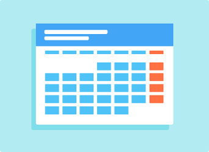

So, here’s a few things to pick up on how to avoid procrastination:
First. If your tasks are just building up, before you even make a start at something, you need to get your priorities in order. Figure out what’s due when, and what might take the longest. It might be a good idea to write them all out and maybe even go by a schedule or timetable to know for sure you’re going to do it. If the tasks seem too big, maybe try break them down into smaller, easier steps. For example, if it’s homework, instead of thinking “do your homework” think of it as “unpack your bag” or “log onto computer”. This will make the task seem less daunting and not as big. If you think you work well under pressure maybe even make up false deadlines creating panic for the new deadline. That way you’ll complete them before you even need to ANDthat will leave you some free time to reward yourself with.
Next. Get rid of all distractions possible. Whatever is stopping you from completing the task at hand, make it disappear... not actually but you need to somehow set yourself boundaries. Whether that is leaving your phone in a different room or isolating yourself from people or even getting someone to hide the tv remote. It is so important that whilst you are getting something done, you’re fully focused, but that'll be discussed a little further in step 3. Taking away distractions ahead of time gives you no choice but to focus on getting your task done. It may even be helpful to have someone check up on you and ask how you’re going, just to make sure you’re doing what you need to be doing. By doing this you’re making yourself socially accountable. For some people that can be a big motivation and if not motivation, that might even scare them into doing their work.
And lastly, just make a start. It is easier said than done but once you start the task, it won’t seem as bad. Maybe even tell yourself you’re only going to do it for 15 or so minutes. You’ll find you will have built up more momentum and maybe do more than said time. Remember when being fully focused was mentioned in the last step? Well, the worst thing you can do when getting the task done, is doing it... but not actually doing it. What mean by this is, when you do something, make sure your mind is not wondering. If you find yourself not focusing or your mind wondering after a while, this signals it’s time for a break. Many studies have looked at the optimal break-schedule. The results differ slightly, but it seems to land somewhere between 30 minutes and 90 minutes, depending on the task you’re doing. Make sure you’re not overworking yourself and don’t forget to reward yourself after completing tasks!
It was pretty bold of me to have chosen this topic because as I said, I myself am a really big procrastinator. And don’t be too hard on yourself, these things don’t happen overnight.
to wrap it up, all you need to do is: